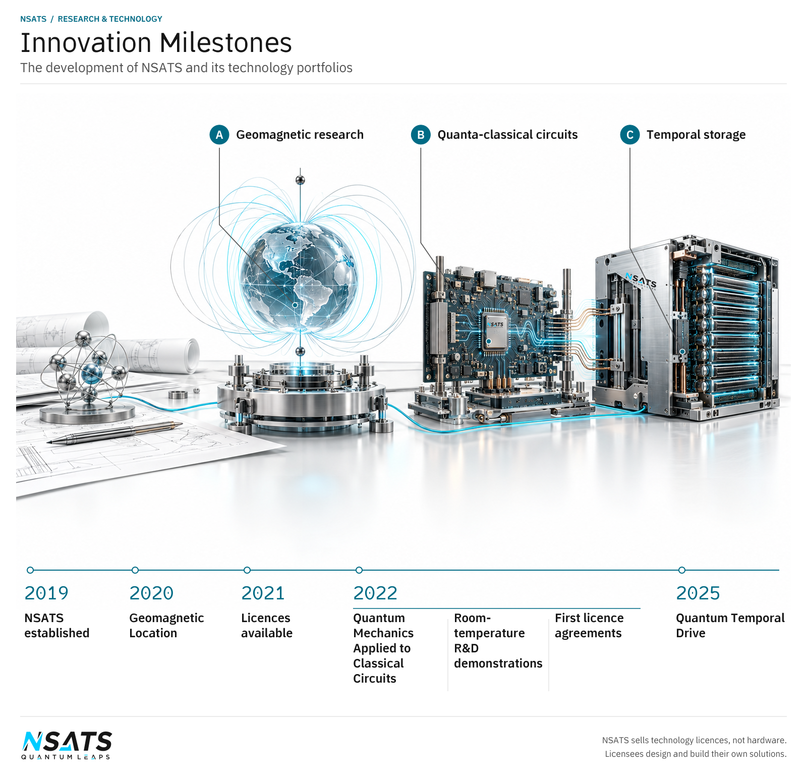

About NSATS
National Scientific AI & Technical Systems Ltd (NSATS Ltd) is an internally funded technology company working in Quantum and Geomagnetism.
NSATS licenses its intellectual property: patents, designs and copyrighted software. Where the licensed IP takes the form of software, NSATS supplies it under the licence, with its documentation and updates. Each licensee designs and builds its own solution.
Our technologies
Quantum-Classical Computing and Geomagnetism are separate technology portfolios. The Technologies overview introduces both and provides routes into their applications.
Geomagnetism
Geomagnetic location uses the strength of Earth’s magnetic field as the basis for determining position. NSATS’s technology is developed and available under licence, and can be incorporated into licensees’ chips, embedded hardware, devices and systems. Its intended directions are devices operating underground, on the surface, in the air, underwater, indoors and in dense urban areas, where location information supports inspection, equipment tracking and navigation without relying on live GPS satellite signals.
The portfolio’s implementation pages follow position information into the equipment and software that use it.
Quantum-Classical Computing
NSATS licences enable classical devices to perform operations based on quantum mechanics, at room temperature. The technology applies principles from quantum mechanics to classical electronic circuits using electrical signals, and covers quantum-inspired gates, reversible computing, memory, storage and data movement. It enables electronic systems to process information faster, use less energy, run with lower heat and hold more data, with implementation through software and specially designed classical chipsets. NSATS sells technology licences, not chips. Its technology helps licensees manufacture their own chips.
Within the Quantum portfolio, the technology pages explain the computing subjects and the chip-design pages place them within a device.
Our origins
Our research began with a question: how could the principles of quantum mechanics become useful in everyday electronic systems without requiring super-cooling? We started with materials research, then turned to ordinary electrical signals. That change in direction shaped our work on applying quantum-mechanical principles to classical circuits, including reversible computing and the way information is stored or retrieved. The result is technology that operates at room temperature, without super-cooling.



Innovation timeline
These milestones trace the development of NSATS and its technology portfolio.
- 2019
NSATS established
National Scientific AI & Technical Systems Ltd (NSATS Ltd) was established in 2019.
- 2020
Geomagnetic Location
Determining location using the strength of Earth’s magnetic field.
- 2021
Licences available
NSATS began offering its technology under licence.
- 2022
Quantum Mechanics Applied to Classical Circuits
Applying principles from quantum mechanics through electrical signals in classical circuits.
- 2022
Room-temperature R&D demonstrations
NSATS demonstrated its own research and development arrangements built with its Quantum technologies working at room temperature. They cover reversible computing, temporal compression, memory, internal buses, quantum-classical network cards and post-quantum security.
- 2022
First licence agreements
NSATS signed its first technology licence agreements in 2022.
- 2025
Quantum Temporal Drive
Temporal compression increases effective capacity: more data can be stored or retrieved within the same physical storage resource. The physical size of the drive stays unchanged. Classical data is encoded using quantum-mechanical logic. NSATS’s processor-assisted, semi-reversible computing contributes to compression, so the drive holds more data.
The increase depends on the drive, how the licensee uses the technology and where the licensed gates, buses and computational technologies sit in the licensee’s design. For both existing drives and RAM, the licensee adds a specially designed classical chipset or controller built with the licensed technology. It encodes the data and manages the intermediate operations when information is stored or retrieved. The drive or RAM itself remains ordinary classical storage. This is not a software-only upgrade or a drop-in change; integration is part of the licensee’s design.
Effective capacity depends on processing time, not only physical size. A temporal drive is better described by how much data it can process and store per second than by a fixed capacity.
Leadership
Ankur Srivastava, Chief Executive Officer
Ankur Srivastava has led NSATS since 2019 and brings 24 years of technical experience in radio, information technology and chip design.
Applications
Our Quantum portfolio addresses Data centres, Data processing and storage, Memory and storage, and Routers and networking; our separate Geomagnetism portfolio addresses Location. These areas connect the licensed technology to decisions about facility capacity, the cost of serving customer data, equipment design, network performance and backup positioning, with implementation shaped by the licensee’s intended task.
Financial Information
Financial information is intended for MyNSATS users with separately approved access. Organisations without access can submit a request.
Contact and stay connected
Choose an enquiry form for technology licensing or another business question. Sign in to MyNSATS for account access, or subscribe to NSATS updates without creating an account.